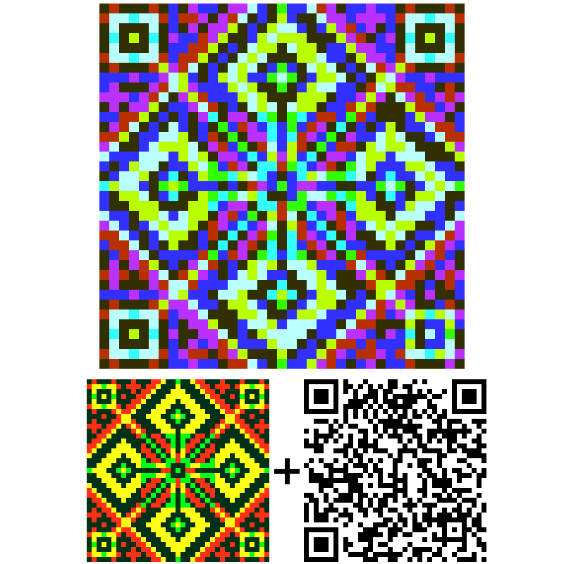

Модель SCI: Математичний міст між цифровим світлом та фізичним пігментом
Фундаментальний алгоритм спектральної гомогенізації середовищ для комп'ютерного зору, стеганографії та високоточного відтворення кольору.

1. Фізична природа Crosstalk
Субтрактивна модель кольороутворення (CMYK) не є дзеркальним або симетричним відображенням аддитивної моделі (RGB). Фізичні пігменти фарби принципово не здатні на 100% поглинати цільовий спектр і повністю відбивати нецільовий.
Головний деструктивний фактор:
Різні пігменти роблять це з різною інтенсивністю та паразитно перекривають сусідні спектри. Жовтий пігмент близький до ідеалу (висока інтенсивність), тоді як маджента та ціан мають найвужчий динамічний діапазон і високу спектральну інтерференцію (crosstalk).
Наслідок: через цей дисбаланс математично точний перенос багатоканальної інформації з екрана на папір класичними методами неможливий — пропорції каналів безповоротно спотворюються.

Fig 2: Порівняльний аналіз каналів: ідеальне розділення (А), паразитна інтерференція (В), лінеаризований відгук (С).
При накладанні фізичних крапель діє закон нелінійного поглинання світла в оптичному шарі. Стандартні профілі ICC (Adobe Photoshop) використовують статичні таблиці перерахунку (LUT), які лише усереднюють масив пікселів для людського ока, повністю знищуючи точні взаємозв'язки колірних хвиль на мікрорівні.
2. Суть рішення SCI: балансування через деградацію яскравості
Модель SCI не намагається порушити закони фізики та «очистити» фарбу від міжканального накладання. Замість цього вона гомогенізує (робить однаковим) цей недолік для всієї системи.
Принцип лімітування:
Алгоритм штучно занижує спектральні характеристики всіх «сильних» та яскравих кольорів (наприклад, жовтого) до рівня найслабшої та найтьмянішої ланки — складного фіолетового діапазону.
Результат: ми отримуємо замкнуту, збалансовану систему кольорових зон. Візуально зображення стає менш контрастним і більш тьмяним. Але ентропія системи прямує до нуля: відносні пропорції та співвідношення між каналами зберігаються з абсолютною математичною строгістю.
Індустрія поліграфії жертвує точністю заради комерційної соковитості. SCI жертвує соковитістю заради абсолютної точності даних.

Fig 3: Графіки спектрального масштабування (Spectral Scaling) за межами лімітів U_ref та L_ref.
Математична модель спирається на зворотний матричний оператор нормування:
Icnorm(λ) = (Icscaled(λ) - Lref) / (Uref - Lref)
Це дозволяє зафіксувати спектральні константи для будь-якої точки середовища незалежно від флуктуацій зовнішнього освітлення.
3. Зворотність процесу: цифрова регенерація
Оскільки пропорції спектральних каналів на фізичному носії збережені без спотворень, процес стає математично зворотним: Фізичний відбиток може бути повторно оцифрований (сканований або сфотографований комп'ютерним зором), після чого в цифровому середовищі, шляхом лінійного нормування контрасту, зображення повертається до своїх вихідних RGB-характеристик без найменшої втрати кольорової інформації.
4. Прикладне значення та діючі компоненти екосистеми
Для людського сприйняття тьмяна картинка — це незвичайно. Але для систем машинного зору та прихованого кодування даних (багатошарових кольорових QR-кодів) — це єдиний спосіб вижити на фізичному носії.
Експериментальне підтвердження моделі (Екран vs Фізичний Холст)

Емісійна фаза (Цифровий екран)
Трьохшаровий код, згенерований в RGB-середовищі. Він бездоганно зчитується сканером безпосередньо з дисплея монітора, оскільки світлові потоки субпікселів ізольовані.

Фізична реалізація (Акрил, полотно)
Той самий код, перенесений на реальне полотно фізичними акриловими фарбами за алгоритмом калібровки констант SCI. Код успішно зчитується камерами, доводячи точність моделі в субтрактивному середовищі.

Багатошарові коди QR.G.B.-ART
Технологія інтегрує три незалежні чорно-білі QR-коди в єдиний кольоровий масив по RGB-каналах. На даному етапі веб-генератор оптимізований для зчитування з екранів. Для точного перенесення на папір потрібен прорахунок ядра моделі SCI.

Орнаментальна стеганографія QRnament
Інструмент маскування цифрових даних всередині етнічних орнаментів та мандал. Робочий кодуючий шар повністю зміщується у синій спектральний канал, роблячи структуру візуально непомітною для людського ока, залишаючи простір для чистого мистецтва.
5. Проектування програмного забезпечення: Автоматизація калібрування
На даному етапі ведеться розробка архітектури ПЗ, що дозволить автоматизувати застосування моделі SCI для масового користувача без ручного прорахунку спектральних кривих.
Майбутній функціонал інструменту (SaaS / Web App):
- Генерація та друк індивідуального тест-патчу «Камертон» на цільовому обладнанні користувача.
- Аналіз фотографії відбитка через камеру смартфона для миттєвої побудови матриці спотворень.
- Автоматичний ре-маппінг та лімітування ентропії вихідного зображення перед печаткою.
Теоретична база повністю сформована та підтверджена натурними експериментами на полотнах. Проект відкритий для співпраці з розробниками ПЗ та фахівцями у сфері комп'ютерного зору (Computer Vision) для спільної реалізації ядра алгоритму.
Контакти для зв'язку
BibTeX / Zenodo Citation
@techreport{model_sci_2026,
author = {Kashkarov, Mykhailo},
title = {SCI Universal Model: Normalization},
year = {2026},
doi = {10.5281/zenodo.19633526}
}